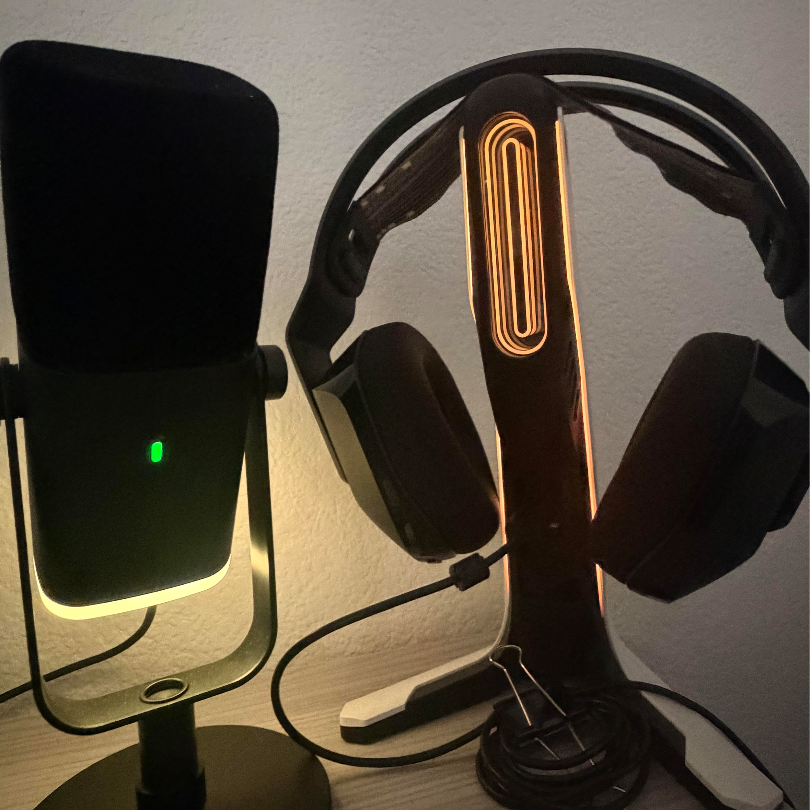

Learning Post 4
This image depicts Chris' home PC setup showing off his headphones and microphone.
Some of the most interesting aspects of this image include: the very geometric shapes of the mic and headphones, the dark color contrast with the very vibrant LED colors featured, which gives it a feeling of mystery and a bit of ominosity.
The most obvious aspect of the image is what these two objects are used for: playing video games and listening to videos or movies or any other kind of media you do at a computer. The most mysterious aspects is what games Chris plays, what movies he watches, if he listens to music on this, when does he typically play games or watch movies? All these these remain a mystery.
My suggestion to push the visual thinking and narrative with the image to make it feel less ordinary would be to really lean into the kind of mood that lighting can give a photo. Maybe it's just Chris' gaming setup but the color of the LED changes depending on the kind of mood he's in. Maybe we need a couple of different angles of the same picture to see things from a literal different perspective which could give new meaning to the photo.

This image is interesting because of the almost ethereal light coming in from the top left corner of the image coming over the city's landscape. Something you wouldn't know by looking at this image alone is that this was my first solo trip with one of my best friends when we went to Universal together and it was my first time at Universal Studios and I think about this trip all the time.
This image relates to my collection because I'm focusing on moments when I felt love and joy!
What my collection hays to say about me is that I'm a really grateful person for the people and experiences I've had, moments when I feel love and joy are relatively easy for me to come accross because all I require is people I care about.
I would consider updating the images by adding interesting lighting similar to how it is in this raw image.
Learning Post 3
I think the topics of visual literacy and visual thinking are interesting, and I'd never really put much thought into it. Being able to draw some kind of a reasonable narrative or conclusion by gathering information through purely images is such a good skill to have and its interesting to see how some teachers enforce that to their students starting as early as elementary school. In addition, the article emphasizes the need to make students feel a genuine interest in order to be more inclined to make a genuine attempt at learning how to be visually literate. I think visual literacy is really important as the saying "a picture is worth a thousand words" wouldn't be true without it. There are several pros and cons attached to using visuals as a way to help readers process things. Notable pros include: faster comprehension is typical of using visuals, it decreases cognitive load, and is very engaging for some people as opposed to chunks of text. Consequently, when there are pros, there's also cons which could include: if not properly formatted or not intuitive having images in websites can be confusing and slow down people's understanding, if formatted wrong the image(s) may cause the site to take longer to load in, additionally, you need to be conscious of accessibility and colorblindness which could affect the images chosen.
Learning Post 2
After having read Best Practices for Modals / Overlays / Dialog Windows by Naema Baskanderi, I can say that it truly was informative as well as easy to digest. Baskanderi gives the readers a very clear definition of what a modal is. She then goes on to say what kinds of instances would be appropriate for using a modal. An example instance that Baskanderi provides is when you need to get input from a user; that would be an appropriate moment to use a modal. She does, however, preface her blog with a very valid point that modals have become these pop-up windows that have a negative stigma, and most users find them frustrating and would like to instinctively close the modal, so you have to be very tactful with the way that you use and present modals. She then goes on to show us the anatomy of modals, naming all the different parts, aspects, and characteristics of it as well as telling us the functions of each and every single one of those aspects. Baskanderi also provides us with real-world examples of different modals, such as when it's a login screen on your computer or maybe on your smartphone when you're trying to make a post on a social media platform; these are different kinds of modals that we sometimes don't even register as modals, even though they very much are.
Learning Post 1
My thoughts on the article that I was assigned was that it was a really interesting article. Some things I took note of were these three things: the "Less is More" theory, using visual chunks in order to minimize users' cognitive load, and labeling. These impacted me the most because I relate to them and notice that they make a vast difference between a mediocre form and a good form. The part about "Less is More" reminds me of a conversation I had with a colleague we began to discuss the topic of "friction" and how to reduce friction as well as cognitive load. Another effective way listed that combats cognitive load is creating a visual chunking up the progress of completion which additionally incentivizes users to complete the form. The power of labels was also interesting to me because I didn't know how much thought went into it. Overall, the article helped me recognize how these small design choices can have a significant impact on the user experience. A website I think uses a good format would be amazon prime video upon logging in the formatting of the form is pretty clean and easy to navigate.